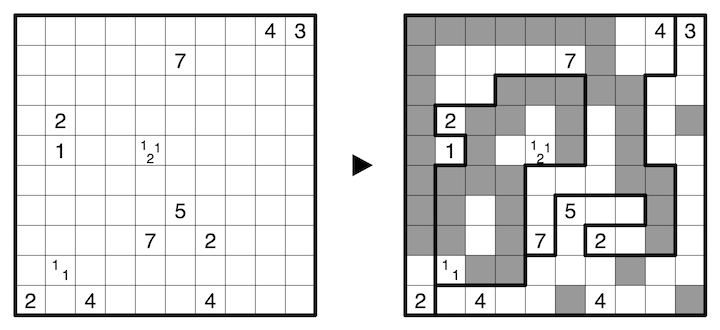

Tapa: Shade some cells such that all shaded cells are orthogonally connected and no 2x2 area is entirely shaded. Cells with numbers indicate the length of consecutive shaded blocks in the surrounding (up to 8) cells, and if there is more than one number in a cell, then there must be at least one unshaded cell or a cell from a different area between the shaded blocks. All cells containing more than one number belong to the Tapa area.
Islands: Shade some cells such that all shaded cells are orthogonally connected, and no 2x2 area is entirely shaded. Every orthogonally connected group of unshaded cells contains exactly one number which is the size of that group.
Narrow Cave: Shade some cells such that all unshaded cells are orthogonally connected, and all orthogonally connected groups of shaded cells touch the boundary of the Narrow Cave area. No 2x2 area may be entirely unshaded. A number in a cell indicates the total amount of unshaded cells seen in all four orthogonal directions at that location, including itself, where shaded cells or the boundary of the area (or grid) obstruct vision.
A 10x10 example is provided:
